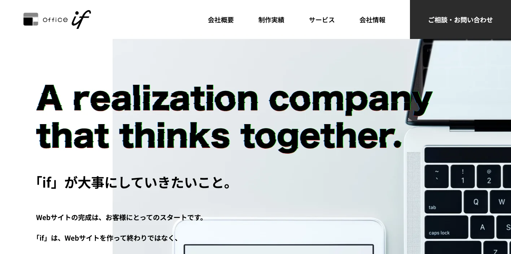
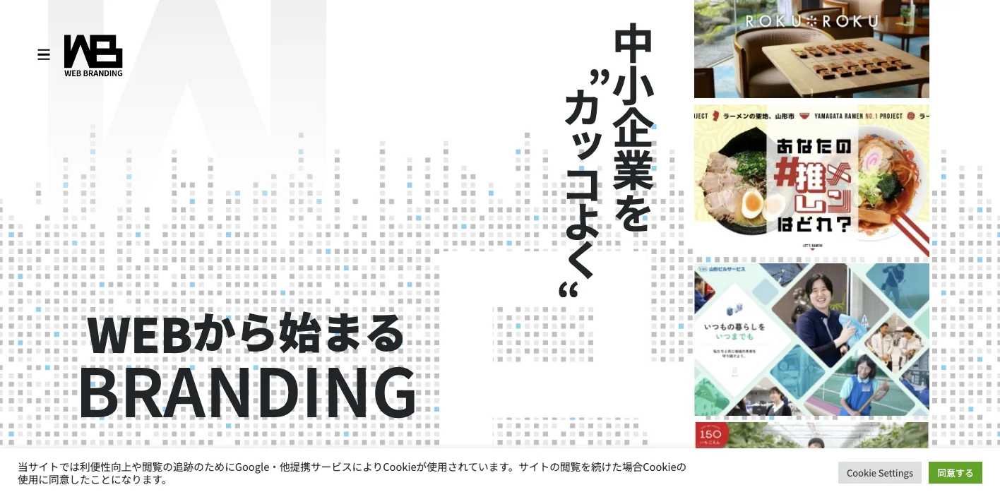
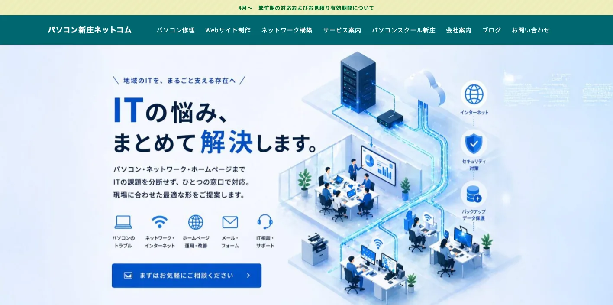
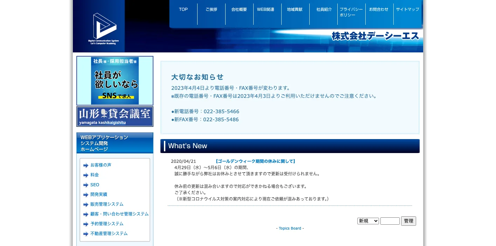
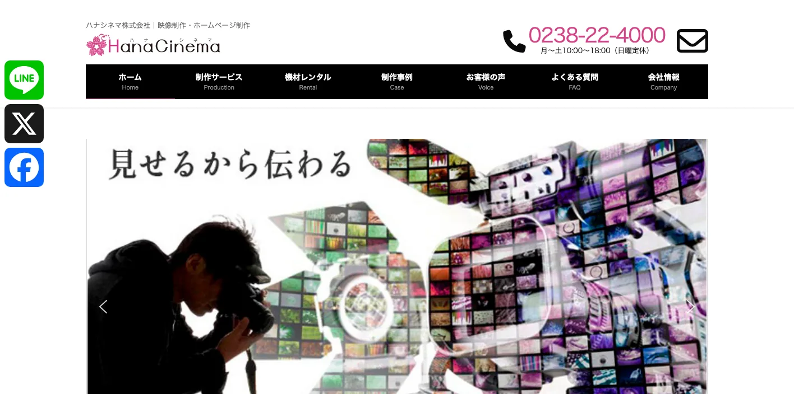
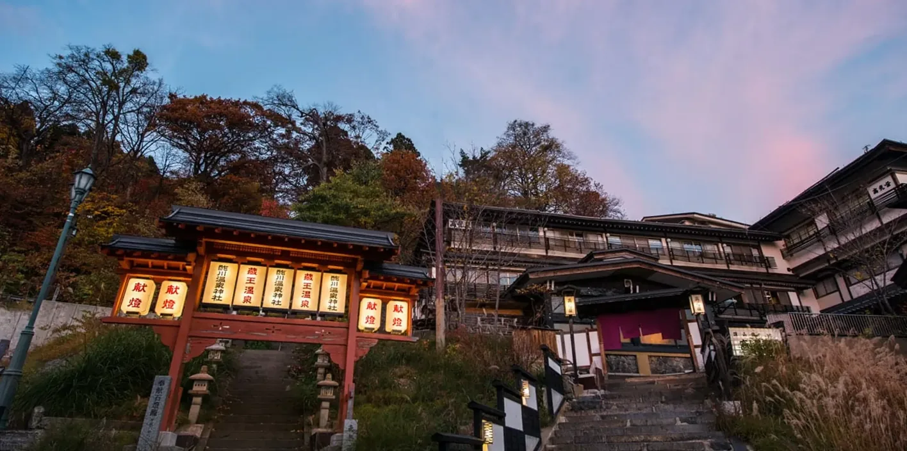
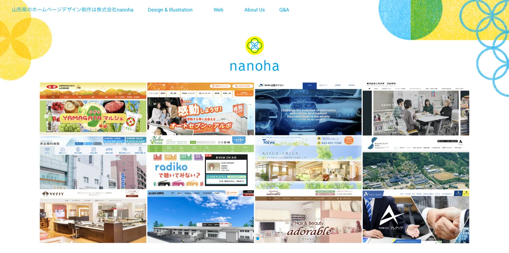
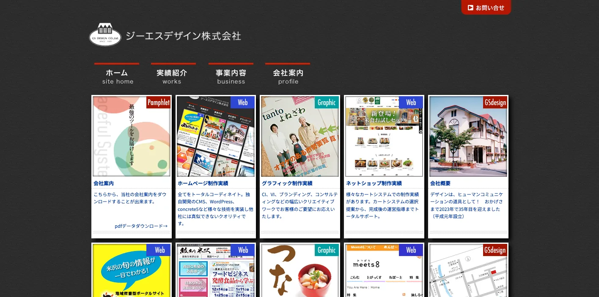
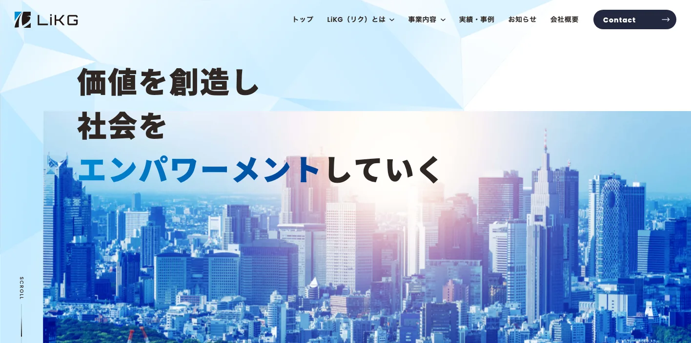

山形県でおすすめのLLMO会社10選｜費用相場と選び方もわかりやすく解説

山形県でLLMO会社を選ぶときは、単に「山形市のWeb制作会社」「SEOに強い会社」だけで探すと判断を誤りやすいです。山形市・天童市・東根市を含む村山地域、新庄市を中心にした最上地域、米沢市・長井市・南陽市の置賜地域、鶴岡市・酒田市の庄内地域では、AI検索で聞かれる質問の形がかなり違うからです。
山形県公式の人口推計では、2026年1月1日現在の県人口は991,279人です。山形県観光者数調査では、令和6年度の県内主要観光地の観光者数が約4,128万9千人となり、令和5年度比で106.8％でした。さらに山形県の令和5年農業産出額は2,441億円で、果実743億円、米739億円、畜産441億円と、食と観光と地域産業が強く結びついています。
つまり山形県のLLMOでは、地域名を入れた記事を増やすだけでは足りません。果物・米・日本酒・観光・温泉・ものづくり・医療福祉・採用まで、一次情報をAIが読み取れる形に整えることが重要です。基本から確認したい方はLLMO対策の基礎記事、東北の他県も見たい方は秋田県の比較記事や宮城県の比較記事も参考になります。自社サイトの現状を先に見たい場合は無料LLMO診断から始めると判断しやすいです。
目次

山形県でおすすめのLLMO会社10選
今回は、山形県内に拠点があり、Web制作、SEO、Webマーケティング、運用支援、システム開発などの公開情報を確認しやすい会社を中心に、LLMOを明示している全国対応会社も補完的に加えました。山形県内でLLMO専業を前面に出す会社はまだ多くありません。そのため、AI検索対策そのものだけでなく、サイト構造、FAQ、地域ページ、写真、取材、EC、採用情報、更新体制まで支援できる会社を比較対象にしています。
山形県では、山形市周辺の都市型サービス、最上の広域生活圏、置賜の製造業・医療・教育、庄内の観光・港湾・食文化で必要なページが変わります。AIに選ばれるには、会社概要やサービス紹介だけでなく、地域ごとの利用シーン、商品情報、アクセス、料金、実績、よくある質問を丁寧に出す必要があります。まずは表で向いている企業を確認し、その後に各社の特徴を見てください。
| 会社名 | 拠点性 | 向いている企業 | 支援の軸 |
|---|---|---|---|
| 株式会社if | 山形市 | Web制作とWebマーケティングをまとめて進めたい企業 | Webサイト制作・LP・EC・MEO・広告運用 |
| 株式会社アサヒマーケティング | 山形市 | 中小企業のブランディングや採用サイトを強化したい企業 | Web制作・ブランド設計・Webマーケティング |
| 株式会社メビウス・ネットコム | 新庄市 | 最上地域でWebとITサポートを一体で頼みたい企業 | Web制作・保守管理・取材撮影・ICT支援 |
| 株式会社デーシーエス | 山形市 | Webサイトと業務システムを合わせて整えたい企業 | ホームページ制作・Webシステム・SEO |
| HanaCinema株式会社 | 米沢市 | 置賜地域で動画・写真・Webをまとめたい企業 | ホームページ制作・映像制作・撮影・運用 |
| ジッカデザイン事務所 | 山形市 | 観光、宿泊、飲食、ブランド訴求を強めたい企業 | Web制作・ブランディング・情報設計 |
| 株式会社nanoha | 山形市 | 不動産、工務店、医療福祉、製造などの実績訴求を整えたい企業 | Web制作・デザイン・業種別ページ設計 |
| ジーエスデザイン株式会社 | 米沢市 | 置賜のものづくりやEC、地域メディアまで相談したい企業 | Web制作・EC・デザイン・地域情報発信 |
| 株式会社LiKG | 全国対応 | LLMO診断から記事制作まで任せたい企業 | LLMO診断・LLMO×SEO伴走・記事制作 |
| 株式会社ジオコード | 全国対応 | SEOとAI最適化を実装込みで進めたい企業 | SEO・コンテンツ・AIO/LLMO・実装改善 |
株式会社AIMAは山形本社の会社ではありませんが、全国対応でLLMO支援を提供しています。月額5万円のLLMO支援は初期費用なし・1ヶ月単位で始められ、質問設計、記事制作、引用チェックに絞って実務を進められます。山形市、最上、置賜、庄内のように検索文脈が分かれる場合も、まず無料LLMO診断で優先順位を確認できます。
1. 株式会社if

株式会社ifは、山形市長町に拠点を置くWeb制作・Webマーケティング会社です。公式サイトでは、Webサイト制作、LP制作、ECサイト制作、MEO対策、リスティング広告運用をサービスとして案内しています。Webサイト制作ではWordPress構築やSEO、スマホ対応にも触れており、MEO対策では地域に関連したキーワード選定やローカルビジネス向けコンテンツ作成を説明しています。
山形県では、山形市・天童市・東根市周辺の店舗、クリニック、住宅、不動産、飲食、教室のように「地域名＋業種」で比較される事業が多くあります。株式会社ifは、サイトを作って終わりにせず、地域検索、MEO、広告まで一緒に考えたい企業に向いています。
参考：株式会社if｜山形のホームページ制作・Webマーケティング
2. 株式会社アサヒマーケティング

株式会社アサヒマーケティングは、山形市立谷川に拠点を置く会社で、WEB BRANDING.JPを通じてホームページ制作やブランディングを発信しています。公式サイトでは、中小企業の魅力を伝えるWebサイト制作、企業らしさの表現、SEO対策やアクセスアップだけに寄らない価値づくりを掲げています。制作実績には山形県内の企業、採用サイト、団体サイトなどが並びます。
LLMOでは、単にキーワードを入れるだけではなく「その会社が何者で、誰にどう選ばれるべきか」をAIが理解できる状態にする必要があります。アサヒマーケティングは、山形県内の中小企業が、採用、企業ブランディング、地域での信頼づくりを重視する場合に比較しやすい会社です。
参考：WEB BRANDING.JP｜ホームページ制作 宮城・福島・山形
3. 株式会社メビウス・ネットコム

株式会社メビウス・ネットコムは、新庄市五日町の会社で、パソコン新庄ネットコムを運営しています。公式サイトでは、山形県内を中心にホームページ制作を行い、サイトの外観だけでなく、管理画面の使いやすさ、汎用性、集客を考慮すると説明しています。WordPress、ECサイト、採用求人サイト、撮影・取材、SEO対策・ライティング、MEO対策、アクセス解析なども案内されています。
最上地域では、新庄市だけでなく、金山町、最上町、真室川町、鮭川村、戸沢村、大蔵村などを含めた広域商圏の見せ方が重要です。メビウス・ネットコムは、Web制作に加えて、IT保守や更新体制まで地域密着で相談したい企業に向いています。
4. 株式会社デーシーエス

株式会社デーシーエスは、山形市幸町に本社を置く会社です。公式サイトでは、ホームページ制作、Webアプリケーション、システム開発、顧客・問い合わせ管理、予約管理、不動産管理、SEOなどを案内しています。会社概要では平成10年設立とされ、山形県内外のWeb関連・システム関連の支援実績が確認できます。
AI検索では、サービスページだけでなく、予約、問い合わせ、在庫、顧客管理、事例管理など、サイト裏側の情報整理も成果に影響します。デーシーエスは、山形県内でWebサイトと業務システムを切り離さず、問い合わせや予約の導線まで整えたい企業に向いています。
5. HanaCinema株式会社

HanaCinema株式会社は、米沢市花沢の映像制作・Web制作会社です。公式サイトでは、動画、ホームページ、チラシなどの制作と運用を案内し、山形県内の中小企業、大学、首都圏企業まで対応すると説明しています。ホームページ制作ページでは、戦略、デザイン、運用後の評価、更新まで幅広く提案するとし、医療、福祉、製造、士業、美容、燃料小売など多様な制作事例が紹介されています。
置賜地域では、米沢市、高畠町、南陽市、長井市などに製造業、医療福祉、観光、教育関連の事業者が多くあります。HanaCinemaは、動画・写真・Webをまとめて使い、職場や技術や施設の雰囲気までAIとユーザーに伝えたい企業に向いています。
6. ジッカデザイン事務所

ジッカデザイン事務所は、山形市五十鈴のホームページ制作・ブランディング事務所です。公式サイトでは、広告デザインの本質は「伝える」ことにあり、商品やサービスを掲載するだけでは成果が出にくいため、ブランディングやマーケティングを明確にしてからホームページ制作に入ると説明しています。Web制作では、誰が、誰に、何を伝えるかを整理し、ヒアリング、調査・分析、設計、デザイン、納品、運用までの流れを示しています。
山形県では、蔵王、銀山温泉、山寺、出羽三山、酒田、鶴岡、米沢など、観光や宿泊、飲食、文化施設の見せ方が成果に直結します。ジッカデザイン事務所は、観光・宿泊・飲食・地域ブランドで、見た目だけでなく物語と情報設計を重視したい企業に向いています。
7. 株式会社nanoha

株式会社nanohaは、山形市のホームページデザイン制作会社です。公式サイトでは、不動産、工務店、一般社団法人、製造、外壁工事、金融・起業学習塾、病院関連など、山形県内外の業種別制作実績を多数掲載しています。山形市、米沢市、天童市、尾花沢市、酒田市、鶴岡市など、県内の複数エリアに触れた実績ページも確認できます。
LLMOでは、業種ごとの質問に答えるページが必要です。たとえば「山形市で工務店を選ぶ基準」「酒田市で法人サイトを作る会社」「天童市の医療機関ホームページ」のように、地域と業種が掛け合わされます。nanohaは、不動産、建設、医療福祉、製造など、実績と業種別ページを丁寧に出したい企業に向いています。
参考：株式会社nanoha｜山形県山形市のホームページデザイン制作専門会社
8. ジーエスデザイン株式会社

ジーエスデザイン株式会社は、米沢市万世町のデザイン制作・ホームページ制作会社です。公式サイトでは、ホームページ制作実績、ネットショップ制作実績、印刷物制作、CI・VI制作、IT事業、デザイン事業などを案内しています。地域情報サイト「よねざわネット」、ものづくり企業の受発注マッチングサイト「技あり米沢」、置賜の食文化を伝える「つなぐ」など、地域情報発信にも関わっています。
置賜地域では、米沢牛、繊維、機械、電子、食品、観光、教育など、地域名と技術・文化が結びつくテーマが多いです。ジーエスデザインは、Web制作だけでなく、EC、地域メディア、ものづくり企業の情報整理まで相談したい企業に向いています。
9. 株式会社LiKG

株式会社LiKGは、LLMOコンサルティングを明確に打ち出している全国対応会社です。公式ページでは、LLMO診断、LLMO×SEOコンサルティング、EEAT強化記事制作を案内し、AI OverviewやChatGPTでの露出状況調査、20項目診断、改善レポート、構造化データ改善指示、記事構成作成などを説明しています。料金も、LLMO診断10万円から、LLMO×SEOコンサルティング30万円からと公開されています。
山形県の企業でも、すでにサイトや記事があり、AI検索にどう出ているかを診断したい場合に向いています。果物、食品、観光、医療、採用、製造など、一次情報を持っているのにAI検索で拾われていない会社は、診断から始める価値があります。
10. 株式会社ジオコード

株式会社ジオコードは、SEO対策、コンテンツマーケティング、オウンドメディア運用、サイト修正・実装、AIO・LLMOなどAI最適化まで案内している全国対応会社です。サービスページでは通常プラン15万円からと公開されており、SEO対策コンサルティング、サイト修正、UI/UX改善、AI最適化、コンテンツマーケティングを組み合わせられる構成です。
山形県内でも、県外商圏を持つBtoB企業、EC企業、採用を強める企業では、地場制作会社だけでなく全国のSEO会社も比較対象になります。ジオコードは、SEOとLLMOを分けず、分析から実装まで任せたい企業に向いています。
参考：株式会社ジオコード｜SEO対策・AIO・LLMOなどAI最適化も徹底支援
山形県のLLMO会社を比較する際のポイント
山形県でLLMO会社を比較するときは、会社名の知名度よりも、山形県の地域構造と産業の違いをページ設計に落とし込めるかを見てください。ここでは、会社一覧とは役割を分け、山形県ならではの比較軸だけを整理します。
山形市中心ではなく、村山・最上・置賜・庄内で検索意図を分けられるか
山形県公式の人口推計では、地域区分として村山、最上、置賜、庄内が整理されています。2026年1月1日現在では、村山地域が502,515人、最上地域が62,712人、置賜地域が184,636人、庄内地域が241,416人です。同じ山形県でも、山形市周辺の生活サービス、新庄周辺の最上広域、米沢・南陽・長井の置賜、鶴岡・酒田の庄内では、ユーザーが知りたいことが違います。
LLMO会社には、山形市だけでなく、地域ごとの相談内容、移動距離、商圏、観光導線、採用事情を分けて設計できるかを確認しましょう。地域ページを増やすだけでなく、各地域で本当に聞かれる質問をFAQや事例に反映できる会社が合います。
参考：山形県｜山形県の人口と世帯数（推計）（令和8年1月1日現在）
観光・宿泊は蔵王、銀山温泉、山寺、出羽三山、庄内を分けられるか
山形県観光者数調査では、令和6年度の県内主要観光地の観光者数が約4,128万9千人でした。調査は山岳観光地、温泉観光地、スキー場、名所・旧跡、道の駅などに分けて観光者数を見ています。山形県では、蔵王温泉、銀山温泉、山寺、出羽三山、最上川舟下り、米沢、鶴岡、酒田など、目的地ごとに検索意図が大きく違います。
観光・宿泊・飲食では、AIが「子連れ」「冬のアクセス」「車なし」「日帰り」「外国人対応」「周遊ルート」のような質問に答えます。LLMO会社には、観光地名、季節、交通、予約、周辺施設、よくある不安をセットで整理できるかを見てください。
果物・米・日本酒・食品ECの一次情報を構造化できるか
山形県の令和5年農業産出額は2,441億円で、果実743億円、米739億円、畜産441億円でした。果実では、さくらんぼ、ぶどう、りんご、西洋なし、ももが主要品目として示されています。山形県の企業にとって、農産品、加工食品、日本酒、ギフト、ふるさと納税、ECはAI検索でも重要なテーマです。
この領域では、商品名だけでは不十分です。産地、品種、出荷時期、保存方法、配送温度、ギフト対応、法人取引、アレルギー、賞味期限、購入方法まで出す必要があります。LLMO会社には、商品情報をAIが読みやすい表、FAQ、構造化データ、比較ページに落とせるかを確認しましょう。
ものづくり・自動車関連・有機エレクトロニクスの専門情報を扱えるか
山形県自動車関連産業サイトでは、山形県に約900年前の山形鋳物にさかのぼる技術が根付き、エンジン、ブレーキ、内装、外装、電子関係など多様な自動車関連製品が製造されていると説明されています。さらに山形県企業立地ガイドでは、米沢オフィス・アルカディアや酒田臨海工業団地など、複数の工業用地・立地環境が案内されています。
BtoBや製造業では、AI検索で「対応できる加工範囲」「量産か試作か」「品質管理」「納入先業界」「設備」「認証」「拠点」「技術者採用」が比較されます。LLMO会社には、専門用語をただ並べるのではなく、購買担当者や求職者が判断しやすい情報に翻訳できるかを確認しましょう。
医療・福祉・教育・採用で安心材料を整えられるか
山形県では、人口減少と広域移動を前提に、医療、福祉、教育、採用の情報設計が重要です。AI検索では「どの地域から通えるか」「家族が相談できるか」「職場として安心か」「雪の日の通勤はどうか」のような生活に近い質問が出やすくなります。
医療・福祉・教育・採用では、対象者、料金、利用の流れ、対応地域、アクセス、予約、相談方法、職種別仕事内容、研修、福利厚生、Uターン・Iターン情報まで整理する必要があります。LLMO会社には、住民や応募者の不安を先回りして、サイト内で回答できるページを作る力が必要です。
雪・広域移動・季節更新まで運用に入れられるか
山形県では、冬季の道路状況、スキー・温泉需要、果物の出荷時期、観光イベント、農繁期、庄内と内陸の移動など、季節で変わる情報が多くあります。これらの情報が古いままだと、ユーザーにもAIにも誤解されます。
比較時には、制作費だけでなく、誰が、いつ、どの情報を更新するのかを確認しましょう。CMS、更新代行、写真差し替え、FAQ追加、Googleビジネスプロフィール、SNSまで含めた運用設計ができる会社のほうが、山形県の実務には合いやすいです。
山形県のLLMO会社に依頼する費用相場
山形県でLLMOを外注する場合、費用は「どこまで任せるか」で大きく変わります。診断だけなら10万円前後から検討できますが、山形市内の店舗サイトを少し直すのか、村山・最上・置賜・庄内まで地域別ページを作るのか、農産品ECや観光ページ、採用サイトまで整えるのかで必要な予算は違います。
大事なのは、単に安い会社を探すことではありません。山形市単点の集客なのか、県内広域の情報設計なのか、ECや採用や観光の一次情報まで含むのかを先に分けて見積もることです。
| 支援タイプ | 目安 | 主な内容 |
|---|---|---|
| 診断・スポット相談 | 10万円前後〜 | AI検索での出方確認、競合比較、改善優先度の整理 |
| ライトな継続支援 | 月額5万円〜15万円 | FAQ追加、少数ページ改善、記事作成、地域名ページの整備 |
| 伴走型の標準帯 | 月額15万円〜30万円前後 | 戦略設計、記事構成、内部リンク、構造化データ、定例改善 |
| 制作・EC・採用込み | 総額30万円台〜150万円超 | サイトリニューアル、EC、採用サイト、写真、商品情報、CMS |
まずは診断だけなら10万円前後から始めやすい
公開価格で分かりやすい入口は診断プランです。LiKGはLLMO診断プランを10万円から公開しています。まずAI検索で自社がどう扱われているか、競合と比べて何が足りないかを知りたい企業には使いやすい価格帯です。
山形県では、地域名、観光地名、農産品名、施設名、サービス名が複雑に組み合わさります。いきなり記事を量産するより、どの質問で出たいのか、どの地域と商品を優先するのかを先に決めるほうが無駄が少ないです。
参考：株式会社LiKG｜LLMOコンサルティング 料金プラン
小さく始めるなら月額5万円〜15万円帯が入口になる
店舗、クリニック、士業、工務店、美容、飲食、教室のように、まず少数ページを整えたい場合は月額5万円〜15万円帯が入口になります。AIMAでも月額5万円のLLMO支援を公開しており、質問設計や記事制作から小さく始めることができます。
この帯は、山形市内の単一店舗や単一サービスなら現実的です。ただし、蔵王、銀山温泉、山寺、出羽三山、庄内のような観光導線、果物・米・酒のEC、採用ページまで作る案件では、追加費用を見ておく必要があります。
伴走支援の中心帯は月額15万円〜30万円前後
毎月改善を進めるなら、月額15万円〜30万円前後が一つの中心帯です。ジオコードは通常プラン15万円から、LiKGはLLMO×SEOコンサルティングを30万円から公開しています。この帯になると、戦略設計、競合調査、記事構成、ページ改善指示、構造化データ、レポート、定例打ち合わせまで含まれやすくなります。
山形県では、都市型サービス、観光、農産品、食品、医療福祉、採用、製造で必要なページが違います。一度作って終わりではなく、AI検索の出方を見ながら直す支援が必要な会社は、この価格帯で比較すると現実的です。
参考：株式会社ジオコード｜SEO対策・AIO・LLMOなどAI最適化も徹底支援
参考：株式会社LiKG｜LLMOコンサルティング 料金プラン
制作・EC・採用まで含めると総額30万円台〜150万円超まで広がる
既存サイトが古い、スマホで見づらい、CMSがない、採用ページが弱い、EC導線がない場合は、LLMOだけでなく制作費が必要です。山形県では、果物、米、日本酒、加工食品、温泉、スキー、ものづくり、医療福祉など、写真や商品説明が成果に直結する案件が多くあります。
地場制作会社に相談する場合は、Web制作費、写真撮影、原稿作成、CMS設定、更新代行、保守費用がどこまで含まれるかを確認しましょう。AI検索以前に、ユーザーとAIが読める情報をサイト内に用意する費用が含まれているかが重要です。
山形県では取材・撮影・商品情報整理で費用が上がりやすい
山形県の案件では、現地取材や写真撮影が効きやすいです。観光では部屋、料理、雪道、アクセス、果物・食品では品種や出荷時期、製造では設備や加工範囲、医療福祉では施設やスタッフ、採用では働く人の雰囲気が判断材料になります。
AI検索でも、会社名、住所、サービス名、商品名、価格、実績、FAQが整理されているほうが理解されやすくなります。取材・撮影・原稿作成・更新作業が見積もりに含まれているかを必ず確認しましょう。
山形市単点か、県内4地域かで予算を分ける
費用で大きく変わるのは、山形市内だけを狙うのか、村山・最上・置賜・庄内まで広げるのかです。山形市内の1店舗なら、主要ページとFAQだけでも始めやすいです。一方、天童、東根、新庄、米沢、南陽、鶴岡、酒田まで含めると、地域別ページ、観光導線、商品ページ、事例、配送条件、採用情報が増えます。
迷う場合は、最初に無料LLMO診断のような小さい入口で優先順位を決め、その後に単一商圏で進めるか、県内広域で設計するかを決めるのが安全です。
山形県のLLMO会社に関するよくある質問
ここでは、山形県の企業や店舗がLLMO会社を検討するときに出やすい疑問を整理します。比較ポイントや費用相場とは役割を分け、依頼前に確認すべきことだけを短くまとめます。
山形県のLLMO会社に依頼する意味はありますか？
あります。山形県は山形市、最上、置賜、庄内で商圏や検索意図が変わります。観光、医療福祉、農産品、食品、ものづくり、採用などの情報をAIに正しく理解される形で整える価値があります。
山形県内の会社でないと意味はありませんか？
必ずしも県内本社である必要はありません。重要なのは、山形市、天童、東根、新庄、米沢、鶴岡、酒田などの違いや、果物、米、日本酒、温泉、製造、医療福祉の文脈を理解して設計できるかです。
山形市以外の会社でもLLMOは必要ですか？
必要です。最上、置賜、庄内では商圏が広く、地元名だけでは説明が足りません。隣接市町村、交通、冬季対応、観光導線、配送、出張対応まで整理したほうが、AI検索で比較されやすくなります。
山形県の観光・宿泊・飲食でもLLMOは効果がありますか？
あります。蔵王、銀山温泉、山寺、出羽三山、最上川舟下り、米沢、庄内では目的や季節が違います。アクセス、所要時間、雪道、予約、周遊、子連れ可否、外国人対応FAQを整理すると、AIの比較回答に入りやすくなります。
山形県の農業・食品・ECでもLLMOは使えますか？
使えます。さくらんぼ、西洋なし、ぶどう、米、日本酒、加工品などは、産地、規格、保存方法、出荷時期、配送条件、法人取引条件を整理すると、購入前や仕入れ前の比較で選ばれやすくなります。
山形県の製造業でもLLMOは有効ですか？
有効です。設備、加工範囲、品質管理、納入実績、自動車関連や電子部品への対応範囲を整理すると、AIが専門性や対応範囲を理解しやすくなります。
SEO会社とLLMO会社は何が違いますか？
SEOは検索結果で見つけてもらう施策、LLMOはChatGPTやAI OverviewなどのAI回答で引用・参照されやすくする施策です。山形県では、地域名検索とAI検索を一体で考えられる会社が向いています。
山形県のLLMO会社に依頼したら、どれくらいで成果が出ますか？
一般的には3〜6か月が目安です。既存サイトの状態、競合、記事やFAQの量、構造化データの整備状況によって変わります。短期で断定せず、観測しながら直す進め方が現実的です。
山形県でLLMO会社を選ぶなら、4地域と一次情報から逆算しましょう
山形県のLLMO会社選びでは、山形市中心の集客と、村山・最上・置賜・庄内の産業文脈を分けて考えることが重要です。山形市周辺の店舗や医療なら生活者の不安を解消するFAQ、観光なら季節性と移動導線、農産品・食品なら商品情報と配送条件、製造なら設備・実績・技術領域、採用なら働く地域と生活情報まで整理する必要があります。
まずは、自社が「山形市内の見込み客」を狙うのか、「山形県内の複数地域」を狙うのか、「東北・全国の商談」を狙うのかを決めてください。そのうえで、戦略だけでなく、ページ改修、記事制作、構造化データ、写真、FAQ、更新運用まで実行できる会社を選ぶと前に進めやすいです。迷う場合は、LLMO対策の基礎を確認し、必要なら無料LLMO診断やお問い合わせから、自社がどの質問で選ばれるべきかを整理していきましょう。